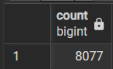
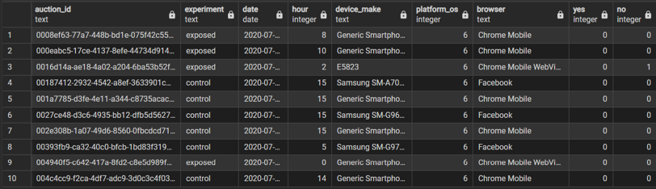
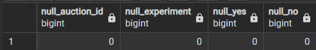
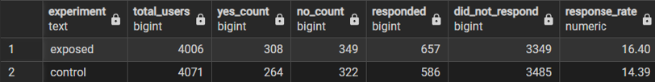
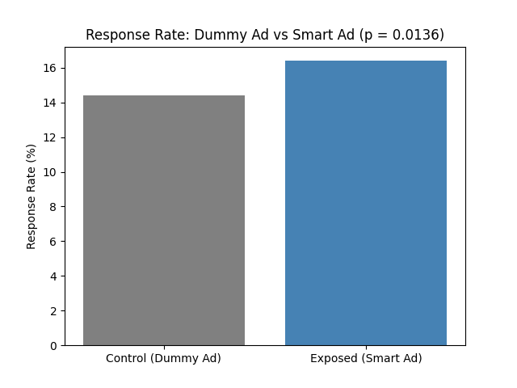

Ad A/B Test Analysis
This project uses SQL and Python to test whether an interactive ad drives a higher questionnaire response rate than a company's standard ad, based on real online advertising data.
Workflow: Raw Data → SQL Aggregation → Hypothesis Test → Visualization → Business Recommendation
Problem Scenario
A company shows its customers an ad meant to get them to fill out a BIO questionnaire. Most users currently see a plain, static version of this ad. The company has developed a more interactive version and wants to know whether switching to it is worth the investment.
Users shown either version can respond with "Yes," respond with "No," or ignore the questionnaire entirely. The metric that matters here is the response rate: the share of users who engage with the questionnaire at all, regardless of which answer they choose. A higher response rate means the ad is doing its job of capturing attention, even before considering what the answer itself was.
The dataset splits users into two groups: a control group shown the standard ad, and an exposed group shown the interactive version. The question this analysis wants to answer is: does the interactive ad actually get more people to respond, or does it just look better without changing behavior?
Hypothesis
| H₀ | There is no difference in response rate between the control group and the exposed group. Any observed gap is due to random variation. |
| H₁ | The exposed group has a different response rate than the control group. The interactive ad has a real effect on whether users respond. |
A chi-square test of independence is used to check whether the response outcome (responded vs. did not respond) is independent of the group a user was shown, at a 0.05 significance level.
Tools Used
PostgreSQL for loading the raw dataset, checking data quality, and aggregating response counts by group. Python (pandas, scipy, matplotlib) for running the statistical test and visualizing the result. Dataset: SmartAd Ad A/B Testing dataset (Kaggle).
SQL: Preparing and Aggregating the Data
The raw dataset was loaded into a PostgreSQL table matching its original structure, then checked and summarized before any statistical testing began.
-- table structure matching the raw dataset
CREATE TABLE ad_ab_testing (
auction_id TEXT,
experiment TEXT,
date DATE,
hour INTEGER,
device_make TEXT,
platform_os INTEGER,
browser TEXT,
yes INTEGER,
no INTEGER
);
-- imported the CSV through pgAdmin's Import/Export tool
-- (ad_ab_testing.csv, the SmartAd dataset from Kaggle)Importing and Verifying the Data
-- confirming the import: row count and a sample of the data
SELECT COUNT(*)
FROM ad_ab_testing;
SELECT *
FROM ad_ab_testing
LIMIT 10;

Data Quality Check
-- basic data quality check: nulls and duplicate auction_ids
SELECT COUNT(*) FILTER (WHERE auction_id IS NULL) AS null_auction_id,
COUNT(*) FILTER (WHERE experiment IS NULL) AS null_experiment,
COUNT(*) FILTER (WHERE yes IS NULL) AS null_yes,
COUNT(*) FILTER (WHERE no IS NULL) AS null_no
FROM ad_ab_testing;
SELECT auction_id, COUNT(*)
FROM ad_ab_testing
GROUP BY auction_id
HAVING COUNT(*) > 1;
Response Rate by Group
-- aggregating response counts by group to compare response rate (dummy ad vs smart ad)
SELECT experiment,
COUNT(*) AS total_users,
SUM(yes) + SUM(no) AS responded,
COUNT(*) - (SUM(yes) + SUM(no)) AS did_not_respond,
ROUND((SUM(yes) + SUM(no))::NUMERIC / COUNT(*) * 100, 2) AS response_rate
FROM ad_ab_testing
GROUP BY experiment;
Python: Testing for Significance
The response and non-response counts from the SQL aggregation were carried into Python to test whether the difference in response rate is statistically significant.
Chi-Square Test
# comparing response rate between the smart ad and dummy ad groups using the counts pulled from SQL
from scipy.stats import chi2_contingency
# [responded, did_not_respond]
data = [
[586, 3485], # control
[657, 3349], # exposed
]
chi2, p_value, dof, expected = chi2_contingency(data)
print("Chi-square statistic:", chi2)
print("P-value:", p_value)Visualizing the Comparison
# visualizing the response rate comparison between groups
import matplotlib.pyplot as plt
groups = ['Control (Dummy Ad)', 'Exposed (Smart Ad)']
response_rates = [14.39, 16.40]
plt.bar(groups, response_rates, color=['gray', 'steelblue'])
plt.ylabel('Response Rate (%)')
plt.title('Response Rate: Dummy Ad vs Smart Ad (p = 0.0136)')
plt.show()
Insights and Business Recommendation
The exposed group's response rate (16.40%) was about 2% higher than the control group's (14.39%). With a p-value of 0.0136, well below the 0.05 threshold, this gap is unlikely to be the result of random chance. The null hypothesis is rejected: the interactive ad has a real, measurable effect on whether users respond to the questionnaire.
Recommendation: The company should replace the standard ad with the interactive one. The improvement in response rate is not only statistically significant but also meaningful in practice, since it is a metric the company can directly influence through ad design.